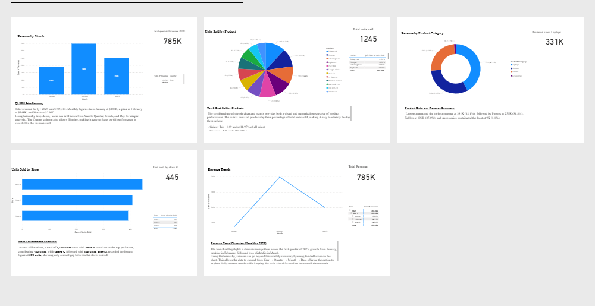
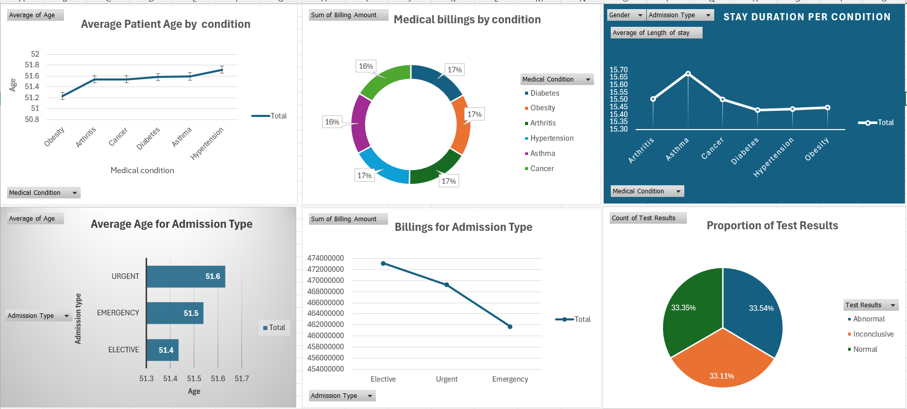
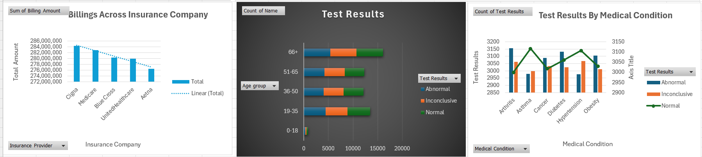

My Projects
Project 1: Q1 2025 Sales Analysis
This Power BI dashboard analyzes sales data for Q1 2025, showing total revenue, top product categories, best-selling stores and products, and revenue trends over the three months.
View DashboardProject 2: Healthcare Data Analysis – Key Insights
 Analyzed patient demographics, hospital admissions, medical costs, and test results to uncover trends in healthcare usage. Findings show consistent patient age across conditions, higher costs for elective admissions, varied billing by insurance providers, and evenly distributed clinical outcomes.
View ProjectProject 3: Power BI Dashboard

Created an interactive dashboard in Power BI to track yearly product trends and sales performance.
View ProjectProject 4: Expense Tracker Application

Developed a GUI-based expense tracker in Python to manage monthly expenses efficiently.
View ProjectProject 5: TODO List GUI App

Built a user-friendly TODO list application with appointment reminders using Python Tkinter.
View Project